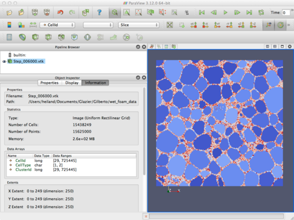
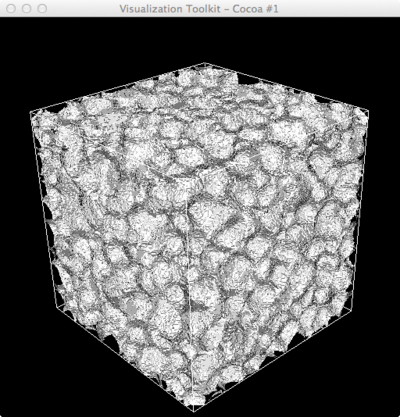
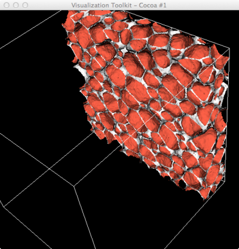
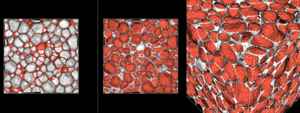
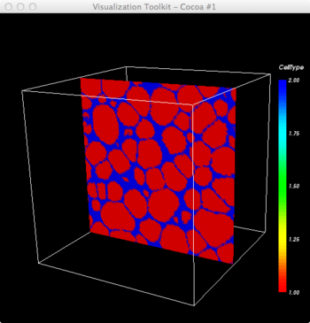
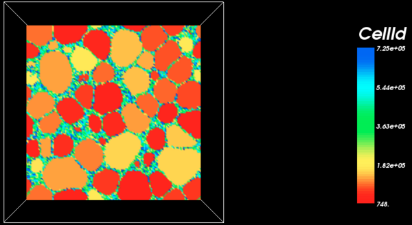
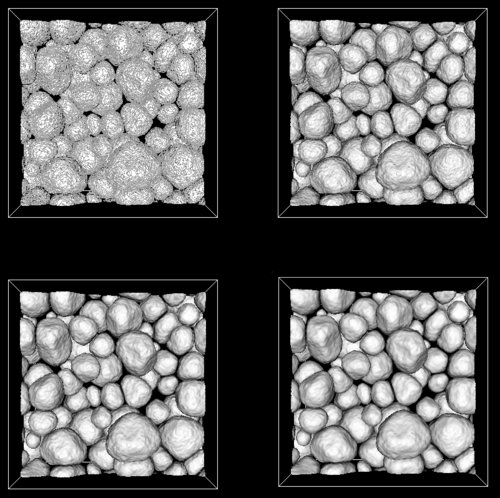
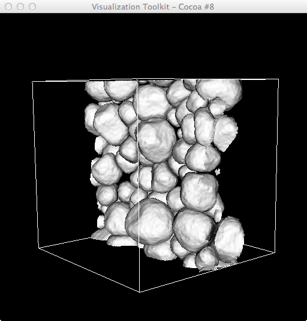

Exploring visualizations for Gilberto's recent wet-bubble sims, containing just 2 cell types: bubble(=1) and water(=2).
~/Documents/Glazier/Gilberto/wet_foam_data$ head Step_006800.vtk # vtk DataFile Version 3.0 vtk output ASCII DATASET STRUCTURED_POINTS DIMENSIONS 250 250 250 SPACING 1 1 1 ORIGIN 0 0 0 POINT_DATA 15625000 FIELD FieldData 3 CellType 1 15625000 char ... CellId 1 15625000 long ... ClusterId 1 15625000 long Each (ascii) .vtk file is about 250M: ~/Documents/Glazier/Gilberto/wet_foam_data$ ll Step_006800.vtk -rw-r--r-- 1 heiland staff 245358398 Nov 8 01:12 Step_006800.vtk




Let's try to render only those bubbles that intersect the center (z=125) slice. Here are renderings of that slice for both the CellType and the CellId fields (for Step_010000.vtk):



Renderings of those bubbles through the center slice, with smoothing=0, 150, 300, 500.

An angled view.